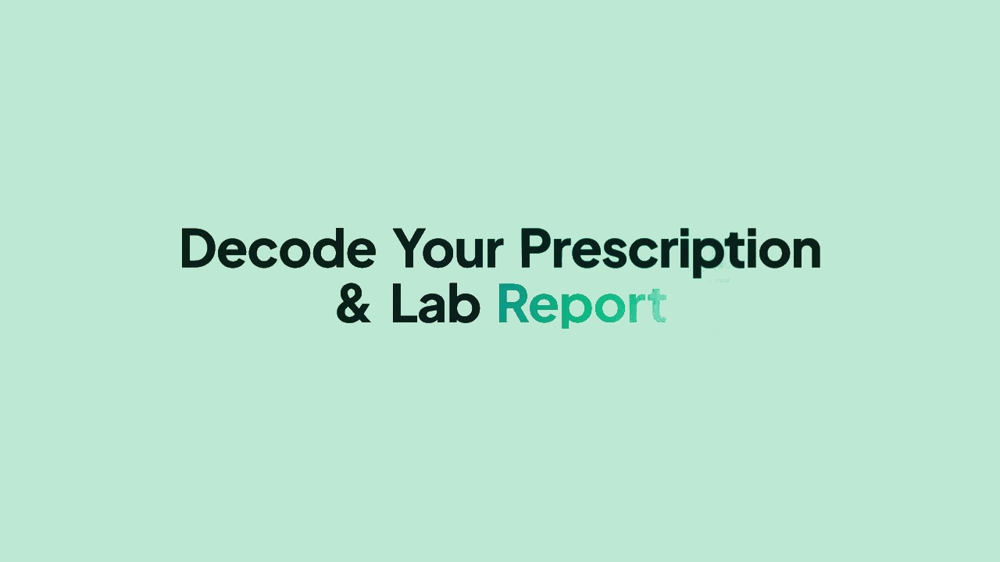
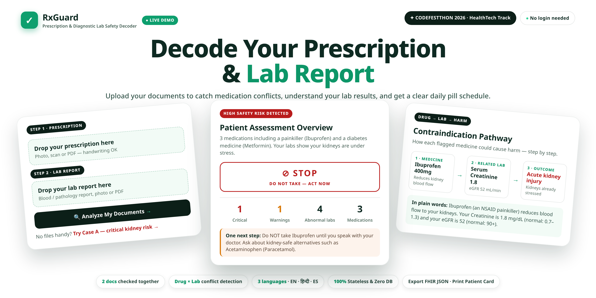
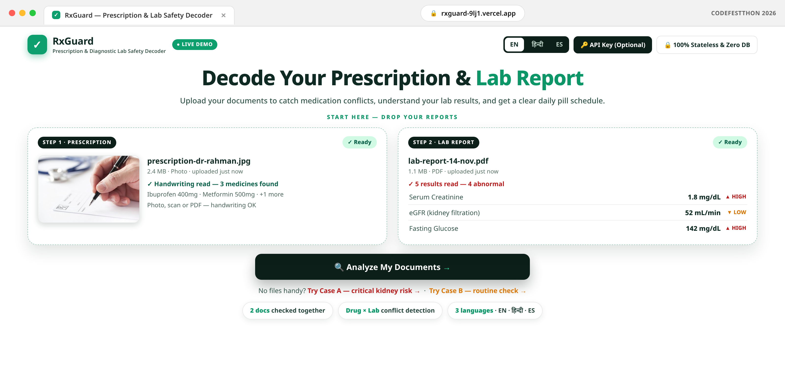
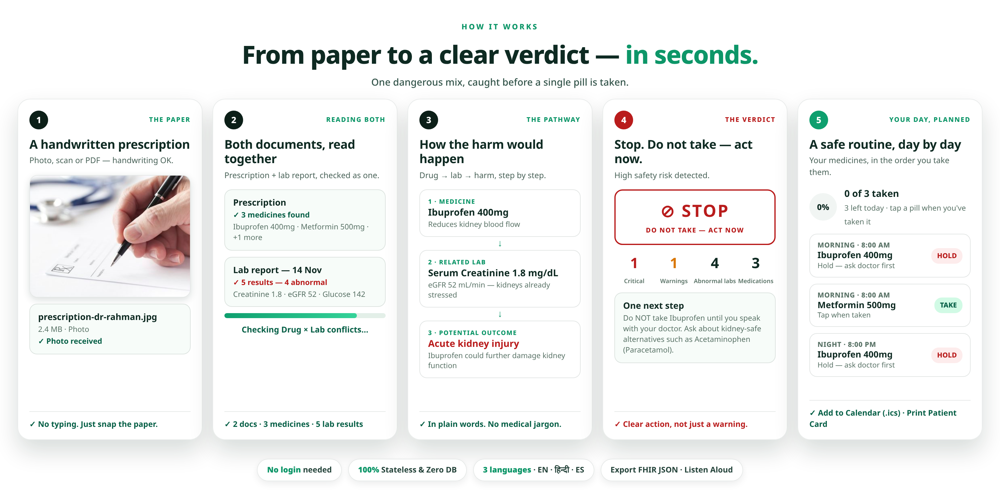
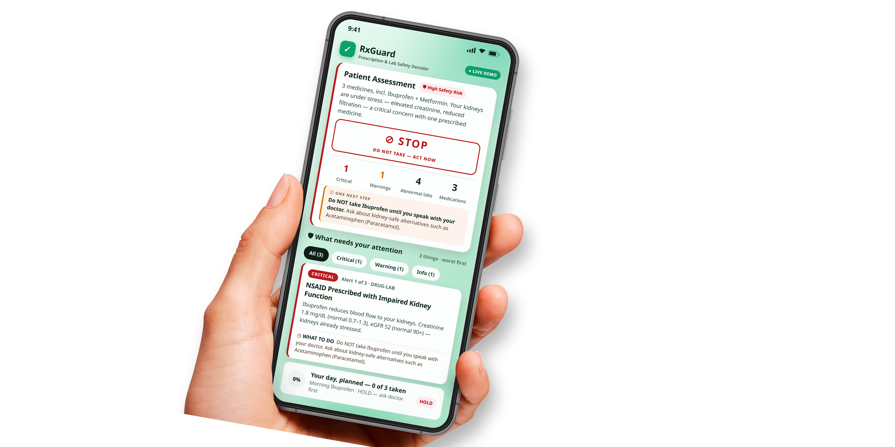
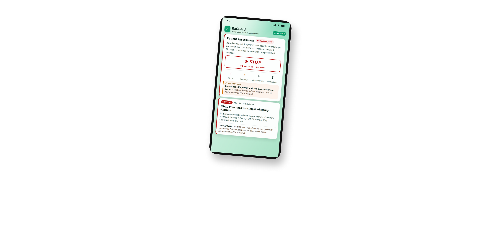
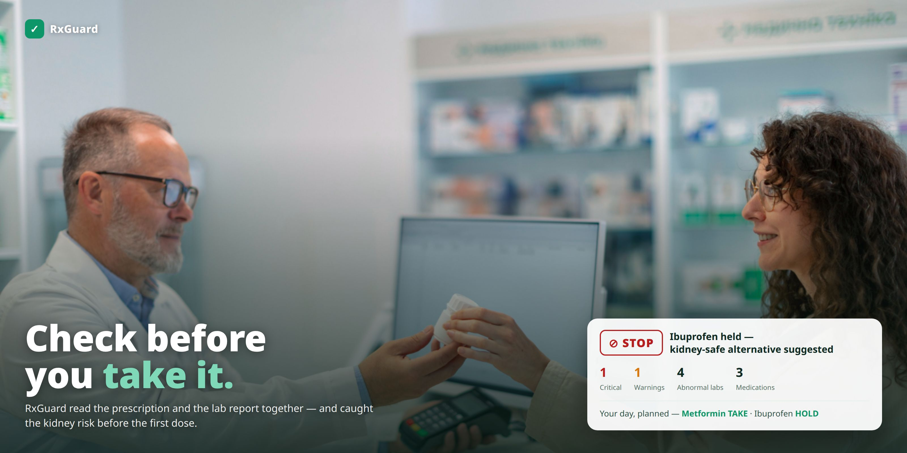

RxGuard
A HealthTech app that decodes handwritten prescriptions and lab reports, reads them together, and catches drug-lab conflicts — before the first dose is taken.
Who this is for: anyone who takes several medicines and wants a plain-words answer to one question: do my prescription and my lab results agree?

The prescription says one thing. The lab report says another. Nobody checks whether they agree.
A doctor writes a prescription by hand. A lab report shows how the kidneys are doing. The two are never read together — so a medicine that is safe on its own can be dangerous with weak kidneys, and nobody finds out until the damage is done.
Three steps
Drop both documents
A photo, scan or PDF of the prescription and the lab report. Handwriting is fine.
Read together
The app reads the medicines and the lab values as one, and checks each drug against each result.
Get the verdict
A clear answer in plain words: what to take, what to hold, and what to ask your doctor about.
Built to be relied on
Plain words first
Every alert explains the risk in plain words — what the drug does, what the lab shows, and what could happen. No medical jargon.
A verdict, not a warning
The app doesn’t just flag a risk. It says what to do next: hold the medicine and ask the doctor about a kidney-safe alternative.
Nothing is stored
Fully stateless with no database — the documents are checked and nothing is kept. No login needed.
It caught a critical kidney risk before the first dose.
Built around a demo case: a prescription for Ibuprofen and Metformin, and a lab report with Creatinine 1.8 and eGFR 52. Read together, the app flagged the kidney risk and said STOP — do not take Ibuprofen until speaking with a doctor.
Screens
In plain words: Ibuprofen reduces blood flow to your kidneys. Your Creatinine is 1.8 mg/dL (normal: 0.7–1.3) and your eGFR is 52 (normal: 90+).
The case, in pictures
The whole story, picture by picture — the upload, the verdict, the day planned, and the check before you take it.






More projects
Other things I’ve built — scroll through the rest.


Want something like this?
Tell me about your project. I reply within one working day.